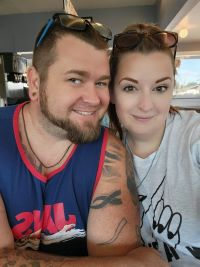
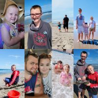

Hello! My name is Levi Hart and I am going through the self paced program at Coding Temple to better my life for the future. I have always had a drive for tech and a drive to learn more, I'm a quick learner and i have fallen into the coding part of things hard. I hope to be able to advance from here into a great carrer where i can be for the rest of my job life. Read on for more about me and my family.
How I Got Where I Am
The Love Of My Life

I love This Woman
Seven years ago i met the best thing that has ever happened to me! I was in a very bad and tough spot in life and she helped me pull myself from that place and gave me purpose the two boys pictured throughout this page are not bilogically mine but I love them like they are my own. Toghether they gave me the drive to change from the path I was on to be a better person to hold responsibility and to better myself along the way, It has defenitly been hard but I couldnt have done it without them, Then alomost 4 years ago we found out we were having another baby my first biolgical one i was scared but i didnt really have a reason to be I had been helping raise 2 half grown children and i was good at it so why was i scared i soon got passed that part! And just a few shorts weeks over three years ago an amazing little girl was brought into this world into our family and has changed us all for the better most days"ha ha".about a month ago we found out that number four is on the way mom and dad arent as excited as the other 3 so with welcoming another child into our lives i looked for oppurtunies to be able to have a better carrer then what i have been doing.
The Clan
The Reason I never Give Up

The whole family
These people pictured excluding myself are the reasons i havent given up and strive to better our lives and to go on a new adventure of becoming a computer programer and mastering that like i have every other thing in my life i know i have a lot to learn through this process but i lovve a challange. One of the main reasons i want to become a programer is to be home more often and be attentive to my wife and my now four children who are the world to me. I know that i have a lot to learn and a lot of work ahead of me but with these people behind me i can accomplish anything!
One Reason I want to become a programer
has been a subtle dream of mine
One of the reasons i want to become a programer and why im so dedicated is because i want to help make things work and make things better and simpler i want to be able to design and make apps or web pages or any other program that will help and be benificial to the society and the world!
The second reason i want to be a programer is because i find if very facinating I would love to learn all i can and continue that education outside of coding temple which i now to an extent im going to have to to be able to continue a carrer in programing. I want to be able to master it and maybe teach my children how to when there older to give them a skill that alot of people dont hace the access to or resources.
Third reason to be a programer
best one of them all
I would love to eventually be to the point to create a video game that my kids would love to play i have alot of ideas and lack the skill currently to make that a reality and i think that it would be amazing to be able to do that or to also program a type of ai that could do things no one has thought of yet theres a saying that the sky is the limit but is it really some have passed the Limit and gone into space so its not really the limit the limit is what you set it as.